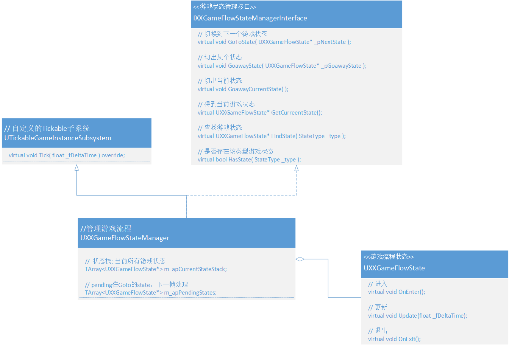

# 一、简介
游戏有很多不同的流程状态（比如：Login、Mainmenu、Loading、StartBattle、Battling、EndBattle、Dialog（NPC 对话）、....）。
以前的我可能最喜欢用枚举来列举这些状态，用 if else/switch 来判断状态，处理对应的游戏逻辑，但这太 low 了。
再加上游戏大大小小的状态数不胜数，不同游戏有不同的状态，需求变幻莫测！
这种设计就像用木棍搭建起的一栋摇摇欲坠的危楼，只要有一点风吹草动，大概率就是重做！状态模式很适合这种场景，它的设计就像一个插线板（状态管理类）和插头（状态），
只要分别抽象并实现（插线板和插头），无论是小到音箱、个人电脑和显示器，大到巨型计算机、城市供电等，都能即插即用。
# 二、状态模式
- 状态模式
- 在状态模式中，类的行为是基于它的状态改变的。 这种类型的设计模式属于行为型模式。
- 意图：允许对象在内部状态发生改变时改变它的行为，对象看起来好像修改了它的类。
- 主要解决：对象的行为依赖于它的状态（属性），并且可以根据它的状态改变而改变它的相关行为。
- 因此
- 只要实现状态接口，可以为该类设计无数个状态。
- 改变类的状态就可以改变类的行为，说明行为定义在状态中，用统一的状态接口去执行这个行为。
# 三、UML 类图

# 1、IXXGameFlowStateManagerInterface - 插线板接口
- UXXGameFlowStateManager 实现了该接口，用它管理和切换游戏的主要状态，即游戏流程状态。
# 2. UXXGameFlowState - 插头
- 继承 UXXGameFlowState 就能得到一个全新的状态。
- 为什么这里不在抽象一层接口？
- 因为 UXXGameFlowStateManager 需要使用 UObject 的功能（如：IsA），不然每次还需要 Cast 转换。
- UXXGameFlowState 在拥有子状态？
- UXXGameFlowState 只需要继承 IXXGameFlowStateManagerInterface 并实现就可以继续嵌套状态。
# 四、抽象状态机
# 1. 上面的状态模式不足之处
- 其他地方需要状态模式怎么办？
- 最直接的肯定是继承然后实现！
- 缺点：1. GameFlowStateManager 是为游戏流程管理定制的，继承会导致大部分代码修改和重载！ 2. 可能导致功能和命名不匹配
# 2. 更进一步的状态模式
- 将状态模式中的状态机抽象出来！并且使用模板类实现，可以在编译阶段优化虚函数的调用！
- UML 类图